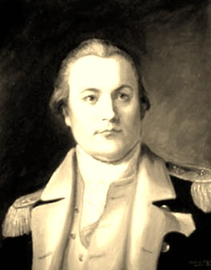

William Alexander
William Alexander was born in 1726. He was the son of Scottish emigre´ James Alexander and the widow Mary Spratt Provoost of NYC. His talented and experienced father was one of the more formidable British supporters in New York and New Jersey. In poor health, James Alexander died in 1756 following a trip to Albany.
William was the eldest surviving son of the union of Manhattan moguls. His very able mother would become his mentor and business partner.
In March 1748, he married Albany native Sara Livingston. The union produced three children who were to be raised in an affluent New York home.
In June 1754, he attended the Albany Congress in place of his ailing father. During the last colonial war, he was in the British army commissariat and also was engaged in private contracting to supply the royal and colonial war effort on the northern frontier. As aide-de-camp, he worked closely with William Shirley, governor of Massachusetts and commander of the provincial forces operating out of Albany.
In 1756, Alexander sailed to England to testify at conduct inquiries on Shirley's behalf. Over the next few years in England, he claimed he had claimed a hereditary title as "Earl of Stirling."
Upon returning to America in 1761, he established himself on an estate in New Jersey ready to take his place among the American aristocracy.
At the outbreak of hostilities, Alexander's commission in the New Jersey militia led to his appointment as Brigadier General in the Revolutionary army in 1776. His wartime career was steller and would place him in command of the northern army at Albany in 1781.
In 1779, Alexander's daughter married British background but Revolutionary operative and speculator William Duer. "Kitty" and Duer sought to raise their family in Albany while Lord Stirling passed his final years.
Chronically ill from an excessive life-style, fifty-seven-year-old William Alexander died in Albany in January 1783. He was buried from the Albany Dutch church but finally was interred in Trinity churchyard in New York.
Portrait: A number of likenesses of William Alexander (1726-83) have appeared. The image shown here is a copy of copy of a portriait that seems compatible with that of his wife. Sepia adaptation copied from an online posting. We seek information on the original artist.